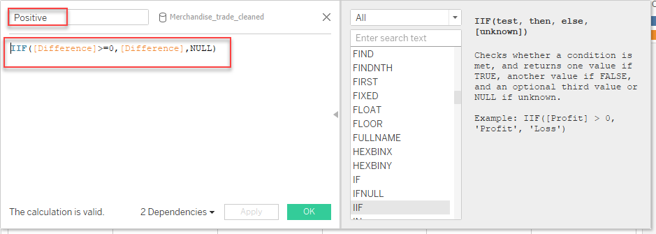

In this DataViz Makeover, I have used data Merchandise Trade by Region/Market provided by Department of Statistics Singapore(DOS).
1. Critique and Suggestions for Visualisation
The original visualization can be seen below.

1.1 Clarity
Area charts are ambiguous for user to read the exact values of data.The stacked area graph comprises subcategories that add up to a total value for each value on the x-axis, thus export and import volumes per year for each country is hidden.
6 Area charts were presented in 6 charts separately, which do not give the viewer a way to quickly and accurately compare the export and import trade volume of 6 countries.
There is no tick marks and month values on x-axis, but tick marks are necessary on continuous scale. It would be hard to clarify time scale and compare import and export volume over time.
y-axis not inconsistently labeled. The unit of import volume is k in chart Hong Kong,but the unit for import and export volume for other charts are M. this leaves room for misinterpretation and/or requires the readers extra time to peruse the chart.
no month values on x-axis. The x-axis shows x would be Month of Period, but x-axis just shows year values. The discrepancy would confuse readers how to understand the time scale.
No source data included. including source data at bottom of visualization would helpful to increase data reliability.
1.2 Aesthetics
the chart is not exported in good quality. It is quite pixelated, even in the original report.
The subtitle is not in line with the charts and front size of subtitle is bigger than main title.
there is poor use of colors in the chart. the overlap color is not distinct from colors of export and import data,which may cause difficulty for readers to identify and understand.
the names of y-axis,Export and import, do not precisely drive the message of the export and import merchandise trade volume. the too concise y-axis name would cause ambiguity.
No call out to provide context. If static chart, include call outs, text or images to enhance the chart. If interactive, include tooltip details and ability to filter.
2. Alternative Design
The alternative design is as follows. 
2.1 Advantages of proposed design
Clarity
- Title and subtitle explain key information and finding which would be used in chart, helping for readers understanding.
- Y-axis is added to enable the reader to read and compare import and export volume across different years and countries more easily.
- Dumbbell chart clearly show the vertical relationship between import,export, countries across years, which enables easy identification of changes over time and trends as there is a visual representation of these changes.
- Add a circle plot to show Percent Difference compared with previous year (Import and Export) by age countries, which would provide reader information not only the absolute values of trading volume but also the growth rate or decrease rate of trading volume.
Aesthetic
- Annotations are used to emphasize key observations. Color is used to bring to attention different categories (e.g.different trading categories).
- Chart titles and notes are aligned to the main chart.
- Six countries have been put in one chart which would be easier for users to compare the difference on import and export values in vertical or horizontal ways.
- Time scope from 2019-2020 on x axis keep consistent without confusion.
3. Final Visualisation
 The final look of the data visualization makeover is shown in Figure 4. It is also available in Tableau Public.
The final look of the data visualization makeover is shown in Figure 4. It is also available in Tableau Public.
4.0 Data visualisation steps
4.1 Data Source
In remaking the existing visualisation, I used
- Table 1 Merchandise Trade Merchandise Imports By Region/Market, Monthly
- Table 2 Merchandise Trade Merchandise Exports By Region/Market, Monthly
provided by Merchandise Trade by Region/Market
4.2 Data Cleaning and Preparation
1. Data Cleaning with Excel
- Remove unnecessary column and rows
- our target data is between 20019-2020, thus we remove trade data from 1976 Jan to 2018 Dec for Table 1 and Table 2.
- And remove Content and data descriptions including Subject, Topic and Title, as well as empty raw.


- Transpose data
- For the convenience of data proprocessing, we transpose(rotate) data from rows to column.

- Take the same method, we preprocessed Table 1 and Table2
- Rename Table 1 as Import and Table 2 2 as Export save file as Merchandise Trade_v1.

2. Data Preparation with Tableau
- Load file
Create a new workbook and click Connect to Data.

Choose the file type > file name Merchandise Trade_v1.

Check Clean with Data Interpreter checkbox to allow Tableau to do automatic cleaning. Tableau is able to intelligently detect valuable columns and rows, and drop the empty ones.
Drag the table Export that we want to the canvas.

- Pivot data and create cleaned file
- Select import data between 2019 to 2020 are spread across multiple country. Select all countries and right click and select pivot.

Rename headers Date, Country and Import accordingly.

Use Tableau to pivot data in sheet with measure values in columns and age in rows. And remove CNT in Measure Values.

Click Analysis to review data in Tableau.

- Export data and save the file with an appropriate name.

- Repeat step 2 for both Export and Import data. Merge the exported two tables using Excel and add a category column to identify the dataset source.

4.3 Data Visualization
- Import the cleaned dataset into Tableau.

- Rename Column header. Changed the original column headers in Pivot Field Names and make their name easier to understand.Rename Export and Import values column to Trade Volume.

- Change data type. Change the data type from String to Date.

4. Create Chart
Add Country, Date and Trade Volume to the Rows and Column

Filter Top 6 Country with highest merchandise trade volume. Check Hong kong,Janpan,Taiwan,Mainland China,Unite State.

- Top 6 trading countries have been selected for further analysis and visualization.

- Filter data in year 2021 because we forgot to Remove data in year 2021 in data preprocess, then we use filter to exclude 2021 year data. Below chart present the import and export volume trend from year 2019 to year2020.

5. Customization
- Add Label data on chart.
- Click Label in Text Mark Card
- Select Show Mark Label and click Line Ends to make the labels only appear on the line end. Otherwise, the chart would be too cluttered.

- Change axis and data unit
- Right-click on one of the labels > click Format to open the Format Pane.
- Click on Field and select Axis, Change Number axis unit to Million.

- Click Pane > Default > change Number to Million.

- Delete country suffix and alias.
Right click country name and select Edit Alias.

Remove Thousand Dollars from Country name.

Right Y axis and Unclick shown header

Fit Width. To fix width, click Standard > select Fit Width potion.

The basic graph should look like this. 
Add another SUM(Trade Volume) to create dual axis.

Right click on the bottom Y-axis and select dual axis chart.

Right click on the right Y-axis, select Synchronize Axis and deselect Show Header.

Change panel from Automatic to Circle to show marks in the main graph

Click the Size in Marks and resize to desired level.

- Drag one more SUM(Trade Volume) in the Rows table > click the down arrow > click Create a Quick Table Calculation > select Percent Difference.

- Select Edit Table Calculation and click Pane (across) option.

- Double click the second SUM(Trade Volume) in Row tab, copy the formula.

- Create a calculated field for Difference variable for Positive and Negative values. Repeat for the positive values.

- Paste the formula above for the Difference formula

- Use the following formula to create Negative and Positive values.

- Repeat for the positive values. 
- Drag both the Negative and Positive values to the second axis in label tab.
- click Label in Marks > click Show Mark Labels > select the Most Recent option > select Scope in Pane
- select the Text to recolor Negative text to Red

- Right click on the main graph area and select annotate.
- Type in insights and observations in the text area.
- Arrange, resize, or format the resulting text box if required.

- Finally, the visualization dashboard for Top 6 Trading Countries has been completed.
5. Derived Insight
insight 1: Singapore merchandises exports to top countries all increase except that to Malaysia which underwent decrease.
from the chart, we can see from 2019 to 2020, Singapores export show increase in five top countries, Hong Kong, Japan, Mainland China, Taiwan and US, but Only Singapore export to Malaysia experienced the decrease with only and large decrease rate, -18.24%.
Insight 2: Singapore largest import and export trade partner is Mainland China and its import and export with China are most stable from 2019 to 2020
The total trade volume of Singapore import and export with China rank 1st among 6 countries form 2019 to 2020, no matter the import to china or export from china, the change rates for both of them are lowest among those of other 5 countries, 0.68% and -2.28% respectively.
Insight 3: The import and export between Singapore and US experienced largest change rate from 2019 to 2020.
Singapore merchandise import from US experienced biggest decrease among top 6 countries from 2019 to 2020. HOwever, at the same time, Singapore merchandise export to US remarkably increase with largest growth rate among top 6 countries, 19.29%.